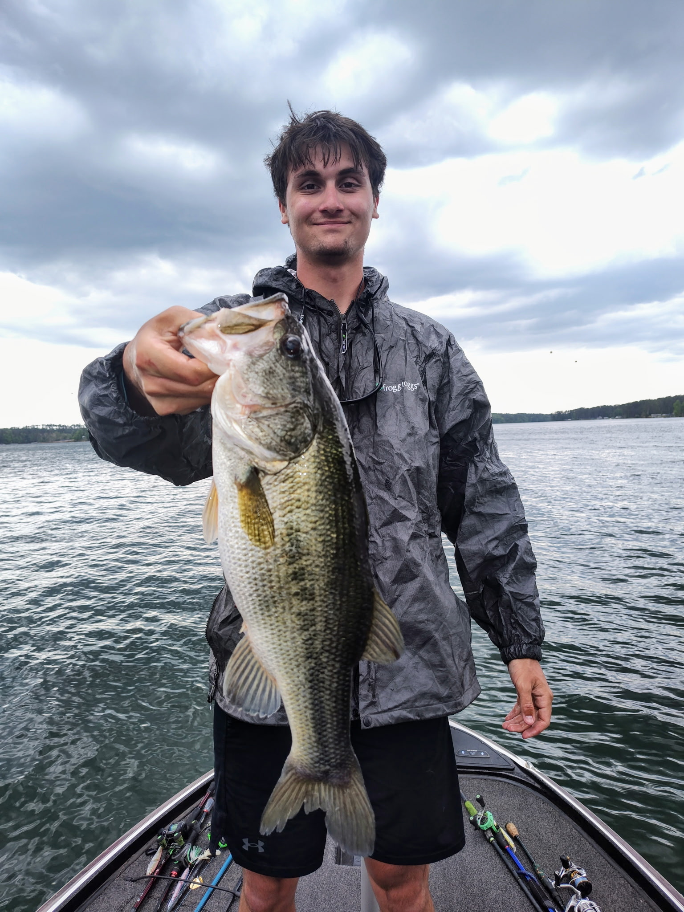

About
I am a third-year Computer Engineering student at the Georgia Institute of Technology with focused interests in cybersecurity, computer hardware, and emerging architectures. I enjoy turning complex problems into clear, testable solutions and working collaboratively to build reliable systems.
Professional Experience
Two IT internships: hands-on troubleshooting, system deployment and configuration, user support, and cross-team collaboration. Experience with scripting, system automation, and basic network/security practices.
Skills
Programming
- Python
- Java
- C / C++
Software & Web
- JavaScript
- HTML & CSS
- Git • Docker
General
- Digital Logic • VHDL • FPGA
- Troubleshooting • Team Collaboration
- Microsoft Office • Active Directory
Education
Georgia Institute of Technology — B.S. Computer Engineering (Expected May 2027)
Hobbies & Interests

I enjoy hobbies such as going fishing and hunting and anything that includes being out in God's creation.